{kind=link}
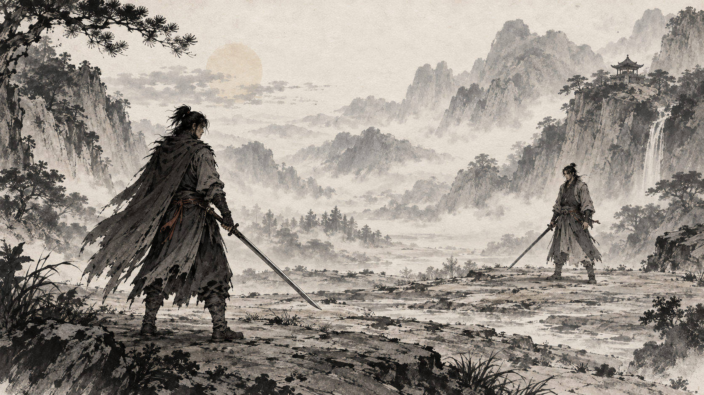
01
정통 담묵 산수
옅은 먹과 여백으로 차분한 강호를 표현합니다.
수묵의 여운과 고요한 분위기
십보강호 · 선택한 화풍
8번의 인물과 선에 3번의 명암 대비, 9번의 안개와 여백을 합쳤습니다.
실제 게임 적용 · 수묵 합과 먹 VFX
기존 준비 화면에서 행동을 확정하면 현재 묶음의 3수 · 3수 · 4수가 이어집니다. 검로를 따라 먹이 그려지고, 하단에는 실제 합 판정과 자원 변화가 표시됩니다.
실제 Godot 4.7.1 화면 · 29.417초 · 세 묶음 고정 계획을 실제 판정기로 해결한 무음 녹화. 준비 화면의 조작과 판정·저장 규칙은 유지했습니다. 상대의 다음 행동과 숨은 자원은 공개하지 않습니다.
아래는 승인 기준의 오프라인 시안입니다. 위 녹화가 이번 실제 게임 적용 결과입니다. 모든 상대·무기별 고유 자세와 사람의 반복 관람 평가는 후속 검수 항목입니다.
기존 전투 준비 화면과 행동 선택·배치·확정 방식은 유지합니다. 확정 뒤에는 현재 묶음의 3수 또는 4수를 나란히 보여주고, 전조부터 마지막 행동까지 이어서 해결합니다. 끝난 수·현재 수·남은 수와 하단 결과를 함께 읽을 수 있습니다.
37.4초 · 3수 / 3수 / 4수 · 영상 1280×1104 · 20fps · 무음
핵심 재미 1 · 행동설계: 상대의 수를 읽고 내 수를 고르는 재미.
핵심 재미 2 · 전투진행: 선택한 수가 멋진 무협 액션으로 펼쳐지는 것을 보는 재미.
승인한 수묵 원화와 검로를 재사용한 연출 시안입니다. 3/3/4는 수의 개수이며, 2수 강공은 전조와 실행으로 나뉩니다. 묶음 안에서는 준비 화면으로 돌아가지 않습니다. 묶음 사이에는 기존 준비 화면에서 다시 설계하는 구간이 있음을 표시했습니다. 이 영상은 세 묶음을 미리 확정한 예시를 연결한 것이며, 실제 게임 화면 녹화나 새 준비 화면은 아닙니다. 하단 수치는 실제 판정 코드의 연속 기록입니다.
영상 전체의 결과를 읽는 복기 표입니다. 재생 화면에서는 아직 진행하지 않은 상대 행동을 공개하지 않습니다.
| 수 | 내 행동 | 상대 행동 | 실제 결과 |
|---|---|---|---|
| 1 | 강공 · 전조 | 강공 · 전조 | 전조 · 다음 수에 실행 · 자원 변화 없음 |
| 2 | 강공 · 실행 | 강공 · 실행 | 내 합 승리 · 내 기세 +1 · 상대 체력 -2 |
| 3 | 명상 | 명상 | 행동 적용 · 내 기력 +1 · 내 내력 +1 · 상대 기력 +1 · 상대 내력 +1 |
| 수 | 내 행동 | 상대 행동 | 실제 결과 |
|---|---|---|---|
| 1 | 이동 | 관찰 | 거리 1 · 자원 변화 없음 |
| 2 | 속공 | 속공 | 내 합 승리 · 내 기세 +1 · 상대 체력 -1 |
| 3 | 막기 | 속공 | 막기 성공 · 피해 0 · 내 기세 +1 |
| 수 | 내 행동 | 상대 행동 | 실제 결과 |
|---|---|---|---|
| 1 | 강공 · 전조 | 강공 · 전조 | 전조 · 다음 수에 실행 · 자원 변화 없음 |
| 2 | 강공 · 실행 | 강공 · 실행 | 내 합 승리 · 상대 체력 -2 |
| 3 | 속공 | 속공 | 내 합 승리 · 상대 체력 -1 |
| 4 | 명상 | 명상 | 행동 적용 · 내 기력 +1 · 내 내력 +1 · 상대 기력 +1 · 상대 내력 +1 |
막기 비용은 2묶음 시작 때 한 번 지불됩니다. 각 합의 기세와 묶음 완료 기세를 구분하며, 기세가 이미 가득 차면 증가량은 0입니다.
화풍과 검로의 기준을 정했던 한 합 시안입니다. 위의 묶음 시안이 최신 흐름이며, 원본의 한 수 뒤 행동설계 표시는 전체 전투 흐름에 적용하지 않습니다.
동일한 게임 판정 코드에 고정된 입력을 넣어 얻은 기록입니다. 아래 표는 정지 결과이며, 아래 원본 시안은 첫 번째 합 승리 상황이며, 최신 묶음 영상은 별도의 연속 판정 기록을 사용합니다.
| 판정 | 비교·원인 | 실제 변화 |
|---|---|---|
| 내 합 승리 | 11 대 9 | 내 합 승리 · 상대 체력 30 → 28 (피해 2) · 내 절초 기세 +1 |
| 상대 합 승리 | 11 대 15 | 상대 합 승리 · 내 체력 30 → 26 (피해 4) · 상대 절초 기세 +1 |
| 합 상쇄 | 11 대 11 | 합 상쇄 · 피해 0 |
| 상대 회피 성공 | 공격 위력 11 / 같은 수 회피 | 상대 회피 성공 · 피해 0 · 상대 절초 기세 +1 |
| 상대 막기 적용 | 공격 11 → 방어도 후 7 → 같은 수 막기 | 상대 막기 적용 · 상대 체력 30 → 27 (피해 3) · 상대 절초 기세 +1 |
| 사거리 밖 | 거리 3 / 강공 사거리 1~2 | 사거리 밖 · 피해 0 |
강공 소모: 양측 기력 1 · 내력 2. 회피·막기는 상대 기력 1 · 내력 0. 기세는 해당 수에서 실제 늘어난 양이며 묶음 완료 보상은 포함하지 않습니다. 회피는 위력 숫자의 대소 비교가 아닙니다.
림버스 공식 합 소개: 양측 공격의 맞대결과 승패 뒤 공격 연결을 참고했습니다. 출시 전 영상의 표현 참고이며 현재 수치 규칙을 가져오지 않습니다.
루이나 공식 전투 설명: 계획한 행동과 맞대결 결과가 구별되도록 구성했습니다.
Nine Sols 개발사 소개: 손그림 동작과 튕겨내기의 리듬을 참고하는 방향입니다. 이번 멈춤 길이·먹 궤적은 십보강호용으로 정한 시안입니다.
Phantom Blade Zero 공식 제작 설명: 무술가와 액션 안무가가 동작 제작에 참여했다는 설명을 참고했습니다. 몸의 중심·발의 접지·검의 연결을 먼저 다듬는 것은 이번 시안의 제작 판단입니다.
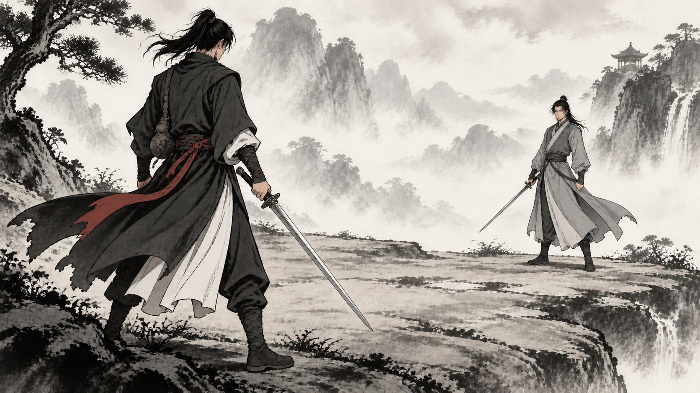
인물·선은 8번 · 대비는 3번 · 안개는 9번
목표는 무협 애니메이션을 보듯, 수 싸움 후에 먹과 붓의 공격 흐름이 자연스럽게 이어지는 경험입니다. 인물과 검은 또렷하게, 원경은 안개 속으로 물러나게 합니다.
행동설계: 기존 준비 화면에서 수읽기 → 전투진행: 확정한 묶음의 발놀림·공격·합·막기·다음 자세 연결. 하단 결과는 같은 사건의 원인을 짧게 보여줍니다.
통합 시안 원본 크게 보기 ↗
옅은 먹과 여백으로 차분한 강호를 표현합니다.
수묵의 여운과 고요한 분위기
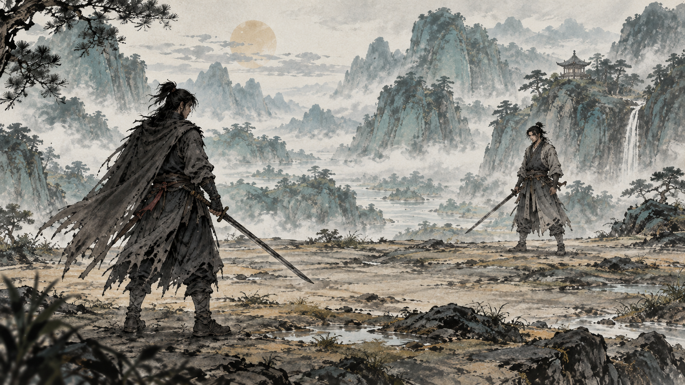
먹선에 청록색을 은은하게 얹어 산수의 깊이를 살립니다.
무협 분위기와 절제된 색감의 균형
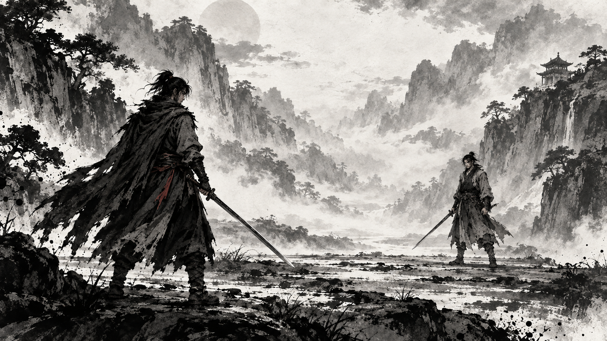
짙은 먹과 밝은 종이의 대비로 대치의 긴장감을 강조합니다.
묵직하고 강렬한 첫인상
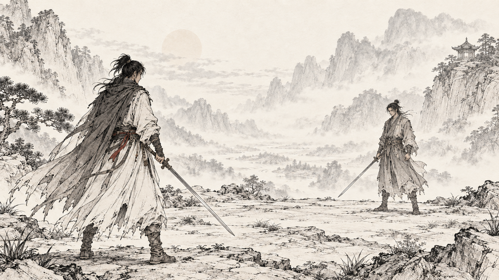
가는 붓선으로 옷주름과 산수를 섬세하게 묘사합니다.
우아한 선과 정교한 묘사
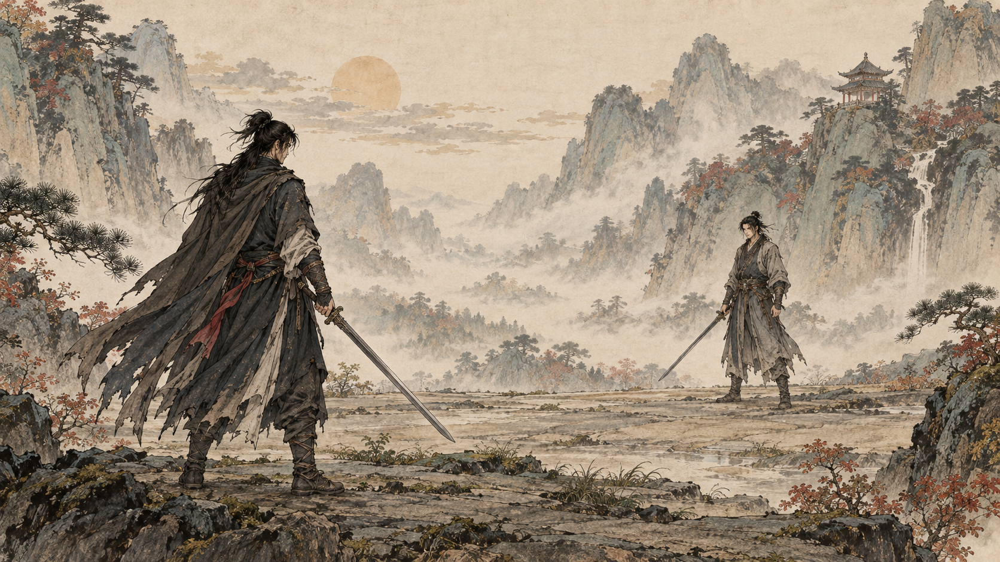
정교한 선에 차분한 광물색 느낌의 담채를 더합니다.
고풍스러운 삽화와 풍부한 색의 층
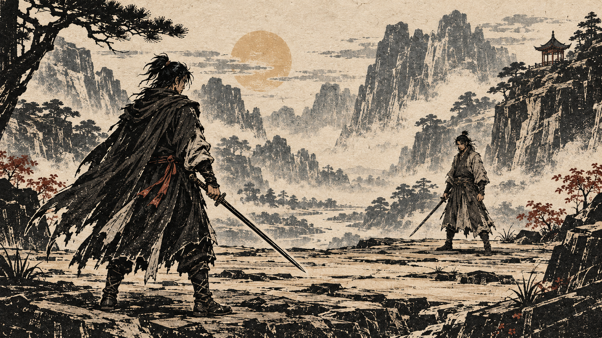
굵은 검은 면과 새긴 듯한 선으로 강한 인상을 만듭니다.
분명한 형태와 독자적인 개성
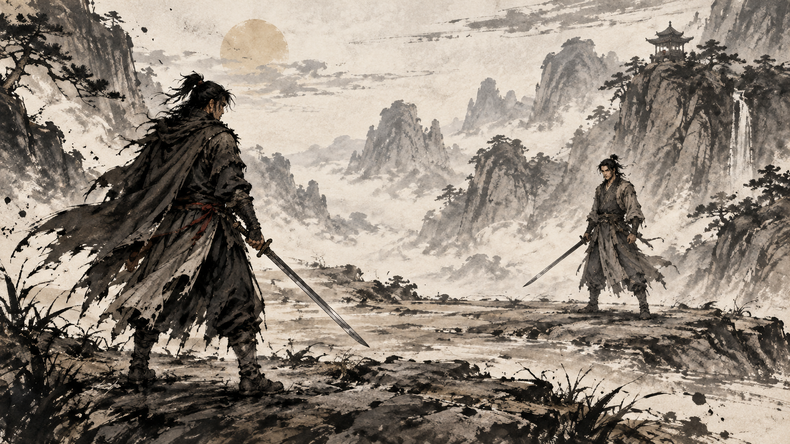
갈라지는 붓끝과 번지는 먹으로 거친 기세를 표현합니다.
무공의 속도감과 거친 질감
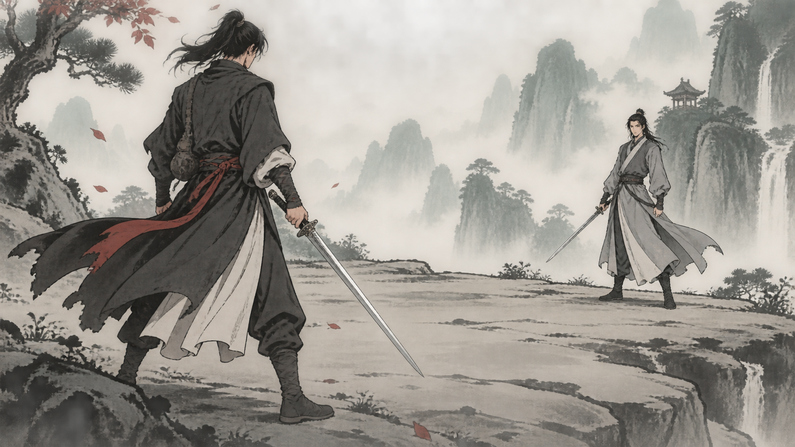
정돈된 만화 인물과 수묵 산수를 함께 사용합니다.
인물의 표정·동작과 무협 감성의 균형
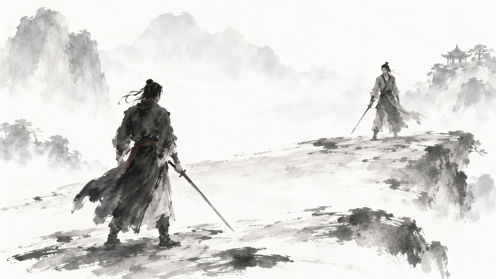
윤곽을 줄이고 옅게 번지는 먹과 큰 여백을 사용합니다.
시적인 풍경과 가장 담백한 수묵 느낌
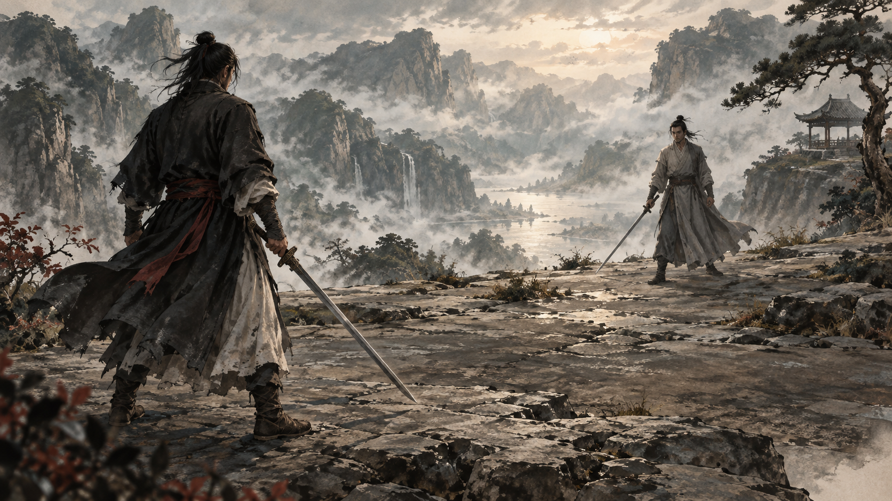
빛과 옷의 부피를 사실적으로 표현하고 먹의 질감을 남깁니다.
영화 같은 공간감과 성숙한 인물